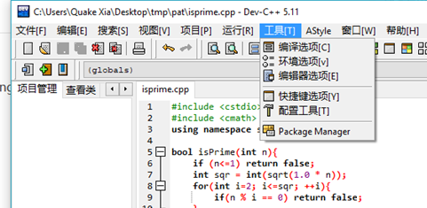
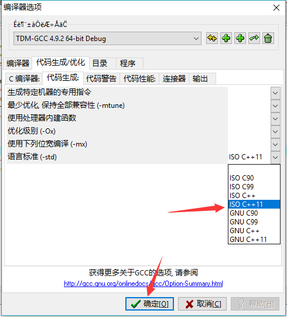

原文连接:https://www.cnblogs.com/yejianying/p/cpp_notes_0.html
博主之前使用的编程语言是Python，但是这门语言的效率比较低（通常，不优化的情况下，但是即便如此我还是偏爱Python），而且博主打算参加PAT考试（真正的原因），及博主打算顺便深入学习下机器学习框架（如PyTorch）和CUDA，所以必须要学C++。所以，开始吧。
我不打算直接从语法入手，这样太浪费时间了。因为我已经有了C和Python的基础，所以我觉得，直接上项目练手，遇到不懂的东西再去翻看相关书籍或观看相关视频会快很多。我的目的很明确，就是将PTA刷到xxx分（依据某TED演讲中“如果你想要达到某个目标那么就不要将这个目标说出去不然你会在别人的赞赏中以为自己已经达成目标而不努力并开始犒劳自己”效应，这里做马赛克处理）。因此，这里的笔记都是关于我平时刷分时遇到感觉“哇，这个功能真的好有用如果早知道了的话应该会很幸福吧”情况时的相关知识点。
其实我是第一次使用Dev-C++，但是由于以前碰过Common::Blocks之类的IDE（Visual Studio就懒得提了，烂大街），所以上手起来没什么问题，就懒得记录太多没必要的东西了（例如如何使用）。但是要提一下的就是要记得设置一下编译器。


以上就是设置编译器支持C++11标准的步骤。下面进入正题。
判断一个数字是否是素数
#include <cstdio>
#include <cmath>
using namespace std;
bool isPrime(int n){
if (n<=1) return false;
int sqr = int(sqrt(1.0 * n));
for(int i=2; i<=sqr; ++i){
if(n % i == 0) return false;
}
return true;
}其实一开始那三行我原本打算省略掉的，但是这里还是加上去比较好，之后的内容都默认已经引入了这些库和在std的namespace下。
直接谈谈函数的原理吧，其实很简单，背后的数学原理就不谈了（毕竟比较简单）。这里的函数的工作就是：
- 判断是不是小于1，如果是那么肯定不是素数，所以返回
false - 先将输入的数字
n转换成浮点数，然后再进行开方处理，得到数字sqr - 接下来就是从2开始，一直到开方之后的数字
sqr为止，不断地将数字n与2~sqe之间的数进行求余，如果求余结果为0，则表明n可以被整除，那么n就不是素数（因为素数只能被1和自己整除），返回false - 如果
for循环执行完都没有返回返回false值，那么继续执行，返回true
下面写一道题练练手。
Sexy Primes
Sexy primes are pairs of primes of the form (p, p+6), so-named since "sex" is the Latin word for "six". (Quoted from http://mathworld.wolfram.com/SexyPrimes.html)
Now given an integer, you are supposed to tell if it is a sexy prime.
Input Specification:
Each input file contains one test case. Each case gives a positive integer N (≤10)
注意，上面的题目及代码来自 ，原作者是merely尘埃。
，原作者是merely尘埃。
#include <cstdio>
#include <cmath>
using namespace std;
bool isPrime(int n){
if (n<=1) return false;
int sqr = int(sqrt(1.0 * n));
for(int i=2; i<=sqr; ++i){
if(n % i == 0) return false;
}
return true;
}
int main(){
int n;
bool flag = true;
scanf("%d", &n);
if(isPrime(n)){
if(isPrime(n-6)) printf("yes\n%d\n", n-6);
else if(isPrime(n+6)) printf("yes\n%d\n", n+6);
else flag = false;
}
else flag = false;
if(!flag){
while(!isPrime(n) || !( isPrime(n+6)||isPrime(n-6)) ) ++n;
printf("no\n%d\n", n);
}
return 0;
}具体做题步骤还是很简单的，所以就不细说了。
不过值得注意的是后面的while(!isPrime(n) || !( isPrime(n+6)||isPrime(n-6)) ) ++n;中的判定条件，一定要注意顺序，+应该在-前面。题目要求的是输出较小的值，而或运算的特点是一旦遇到判定为真的值那么就直接输出真，不会再继续判定（所以如果isPrime(n+6)是真，那么isPrime(n-6)就不会运行，直接输出真），所以n+6的判定应当放在前面。